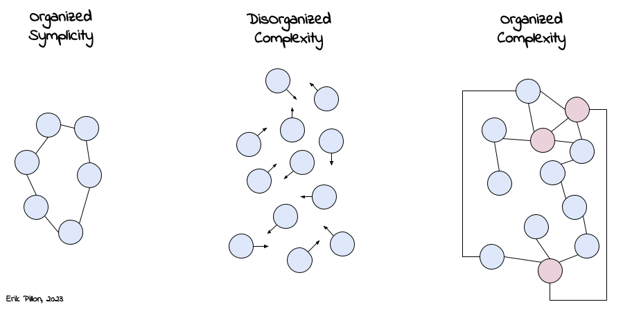

Review of one of the most influential papers in the history of science.
Published on April 16, 2023 by Erik Pillon
post article review
5 min READ
I stumbled upon this article while reading the amazing book of Kate Raworth “Doughnut Economics“(that btw I’m recommending to everyone) and was quoting extremely interesting paragraph and reproposing visionaries theories. I founded a free version of the article and here’s what I learnt.
“Science and Complexity” is an influential paper written by Warren Weaver in 1948 (i.e., more than 70 years ago, that gives quite an idea about how visionary this article was), which explores the concept of complexity and its implications for scientific research.
In the paper, Weaver attempts to give a definition of “complexity”: for the author complexity is a measure of the number of variables involved (e.g., number of particles and their spacetime coordinates) in a system, as well as the interactions between those variables. It is shown that while traditional methods have been extremely effective and useful for “few variables systems”, the same methods can’t be employed anymore while dealing with modern problems, like the studies of gas (hence molecular problems), meteorology, macro economical problems, sociological problems, etc. As the famous saying goes, “modern problems requires modern solutions”!
Weaver suggests that new methods and approaches are needed to deal with complex systems, including the use of mathematical models, computer simulations (what he still calls “electronic calculators”), and interdisciplinary collaboration between experts from different fields. 1
To overcome these limitations, Weaver proposes new approaches to studying complex phenomena. He suggests that new methods and approaches are needed to deal with complex systems, including the use of mathematical models, computer simulations, and interdisciplinary collaboration between experts from different fields. He also emphasizes the importance of recognizing the limitations of scientific knowledge in the face of complexity, and the need for scientists to remain humble and open to new ideas.
Overall, “Science and Complexity” is a thought-provoking paper that challenged the traditional view of science and had a significant impact on the development of complex systems theory and interdisciplinary research. It emphasizes the need for new approaches to studying complex phenomena and the importance of recognizing the limitations of scientific knowledge in the face of complexity.
New approaches are needed to study complex systems, including:
Science and Complexity: the original article by Weaver published in 1948
Thinking in systems by Donella Meadow: A comprehensive introduction to systems thinking, a way of understanding and analyzing complex systems.
Doughnut Economics: In this book is presented a new economical model based on the fact that we need to understand the economy as a complex system that is embedded within society and the environment.
it is indeed in this period that the field of applied mathematics was born. After realizing the importance of a multidisciplinary approach to complex problems (i.e., the Enigma machine during WWII), scientists started realizing how mixing people with different backgrounds created a synergetic loop where ideas can reproduce easily generating new original tools and approaches. ↩